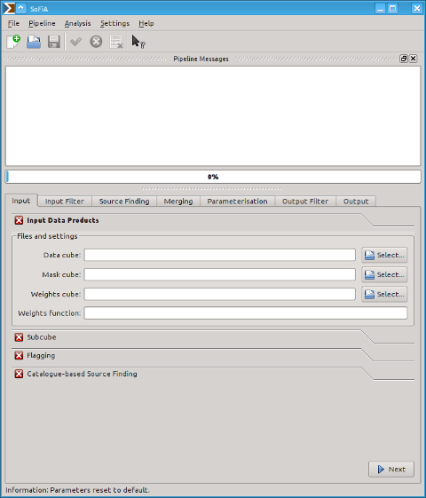

SoFiA provides a comprehensive and modern graphical user interface based on the Qt framework. It has been designed to run on different operating systems and provide the native look & feel on each system. Hence, a SoFiA window in Mac OS X will look slightly different from a SoFiA window on a Linux machine, but the functionality will be the same on both systems. The screenshot shown on this page was obtained on a Linux/KDE system in ‘Plastik’ style.

The user interface of SoFiA can be subdivided into the following areas:
| Mac OS X | Linux / KDE | Linux / GNOME | |
| New File | CTRL+N | CTRL+N | CTRL+N |
| Open File | CTRL+O | CTRL+O | CTRL+O |
| Save File | CTRL+S | CTRL+S | CTRL+S |
| Save File As | CTRL+SHIFT+S | CTRL+SHIFT+S | |
| Quit | CTRL+Q | CTRL+Q | CTRL+Q |
| Run Pipeline | F2 | F2 | F2 |
| Abort Pipeline | ESC | ESC | ESC |
| Full Screen | F11 | F11 | F11 |
| User Manual | CTRL+? | F1 | F1 |
| What’s this? | SHIFT+F1 | SHIFT+F1 | SHIFT+F1 |